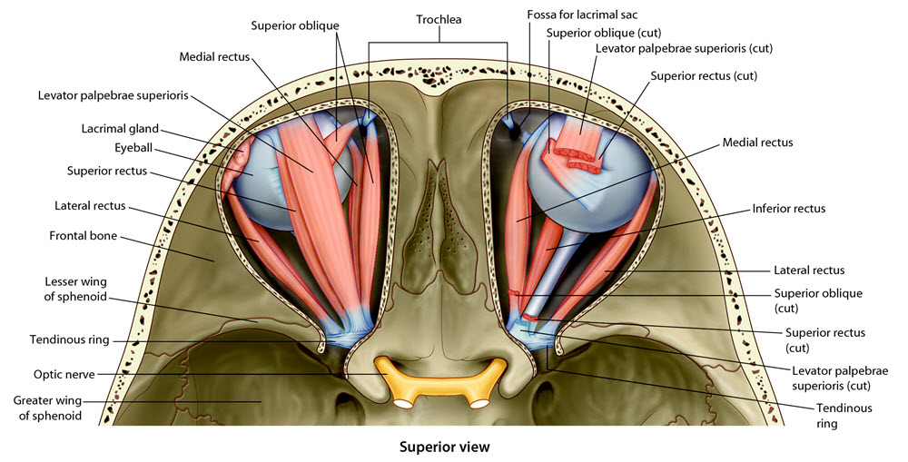
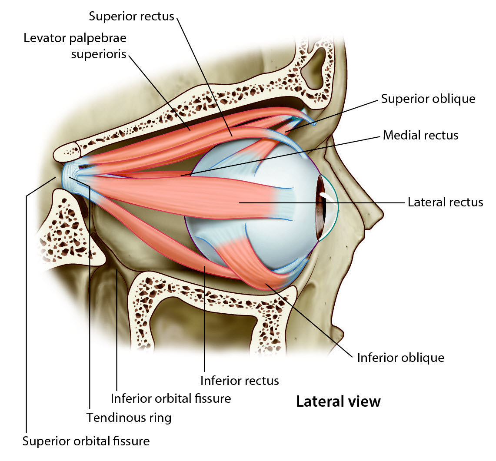
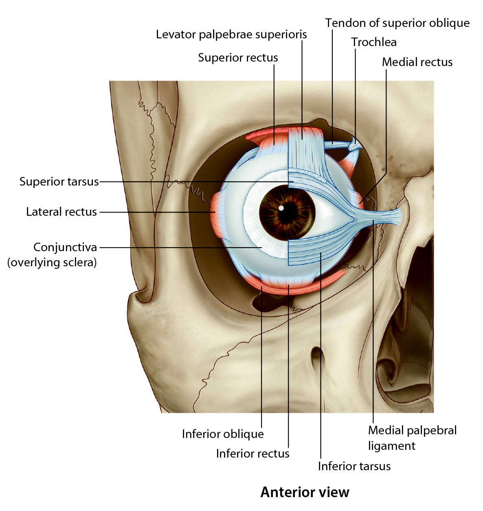
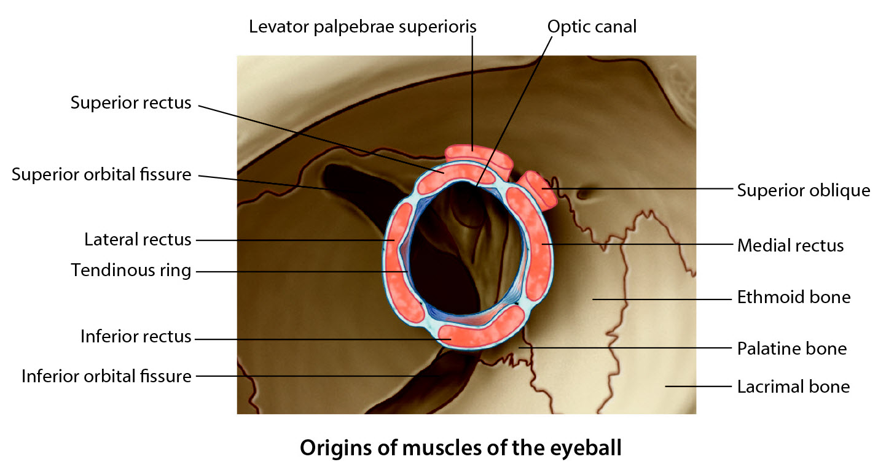

Neurology Lab 6 - Module 2 -Orbit - Muscles: Page 1 of 5
×

READINGS:Gray's Anatomy for Students (Fourth Edition): Pages: 925-930 |
Ocular muscles
| 🔍 Tap on an image to enlarge: |
|  |
|  |
|  |
| Begin with the skull. |
| Add the optic nerve. |
| Add the superior oblique. Find the location of the pulley mechanism that allows this muscle to function. |
| Add the inferior oblique. |
| Add the superior rectus. |
| Add the inferior rectus. |
| Add the medial rectus. |
| Add the lateral rectus. |